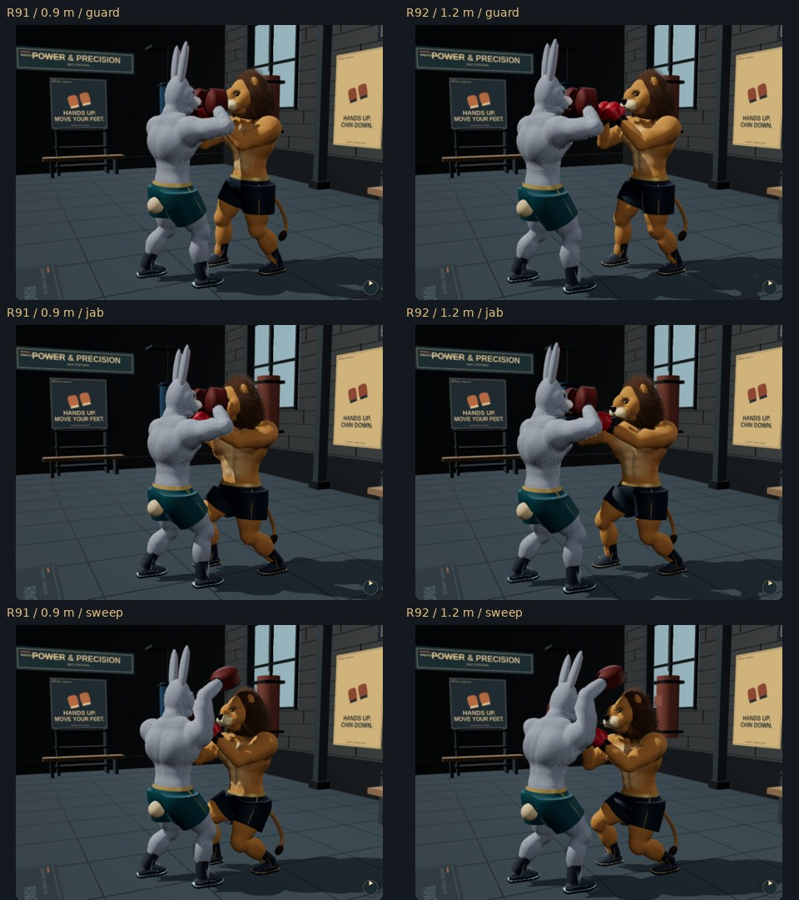

Actual matching app renders: R91 before / R92 after. Partner root separation increases from 0.9 to 1.2 metres. Punches still meet the mitts; planted hip hinges carry the roll into the sweep.

Chromium software rendering, including a separate phone-sized capture; physical-phone sustained FPS remains unverified.